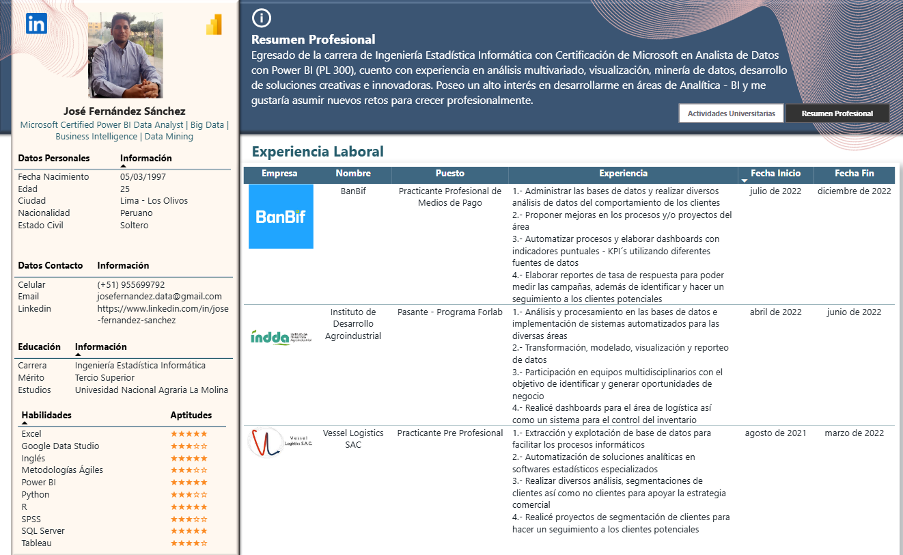

CV interactivo en Power BI · Versión 2022
Presentar mi trayectoria profesional de forma visual e interactiva, en lugar de un CV estático en PDF.
Resultado: Resume experiencia, formación, certificación y habilidades en un solo reporte navegable.
Ver CV interactivo →